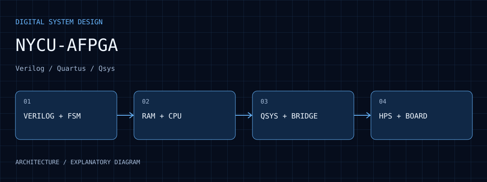
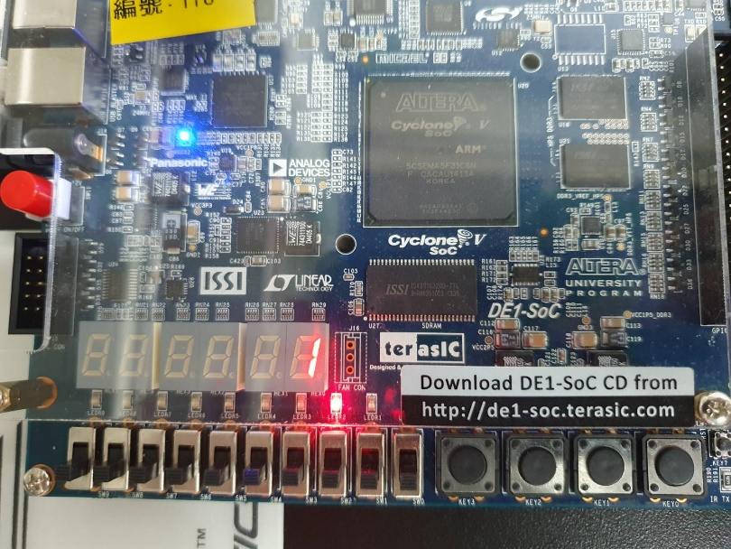

Eight documented labs
The public edition preserves explanations, Quartus/Verilog/HPS sources and reviewed archived images.
NYCU-AFPGA
Eight documented labs covering combinational logic, FSMs, RAM, a simple processor, and DE1-SoC HPS/Qsys integration.

01 / PURPOSE
Study digital logic, memory and processors before exploring HPS-to-FPGA interfaces.
02 / ARCHITECTURE
Labs 1–4 progress through combinational/sequential logic, arithmetic, registers and FSMs.
Labs 5–6 combine RAM, ROM and a small processor to expose datapath/control relationships.
Labs 7–8 connect Linux userspace, the Qsys address map and HPS-to-FPGA bridge.
LEDs, seven-segment displays, RTL views and archived waveforms provide different evidence levels.
03 / WORKFLOW
Use the eight-lab index to find projects, top-level files and explanations.
Compare inputs, control and outputs with the HDL and test matrix.
Inspect device, pins and IP paths before synthesis or compilation.
Read waveforms and archived photos; verify software/hardware addresses for SoC exercises.
04 / EVIDENCE
The public edition preserves explanations, Quartus/Verilog/HPS sources and reviewed archived images.
The README records a Quartus 25.1 full compilation of Lab 01 Part 01 with 0 errors and 248 warnings.
Photos show one-hot LED movement and round-trip counting, consistent with HPS register writes.

The archived photo records LEDs and round-trip count 1. Interpret with main.c led_mask and loop_count; this is not a new board run.
Open full size ↗05 / ANALYSIS
Lab 8 connects a Linux program, bridge, Avalon peripheral and physical pins. The display counts complete round trips, not LED position.
A Lab 8 step includes both a 100 ms and a 1 s wait, totaling about 1.1 seconds. A single comment does not describe total delay.
A rebuild establishes tool compatibility. The record lacks SDC/clock constraints, so successful compilation does not establish timing closure.
06 / REPRODUCE
07 / LIMITS
The public edition excludes full assignment reports and personal details. Archived photographs, a representative build and verification still to be repeated are distinguished.
08 / SOURCES
Selected images retain their visual content. Captions distinguish prototype photographs, application interfaces, archived records, analysis and simulations.